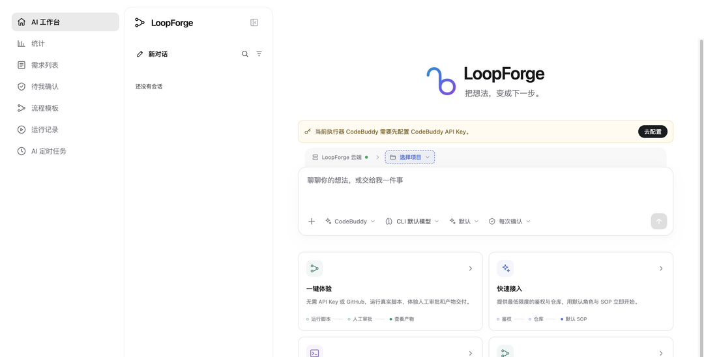
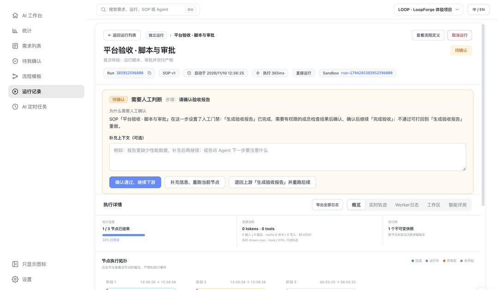
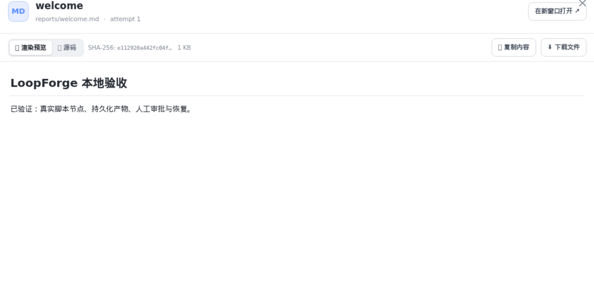
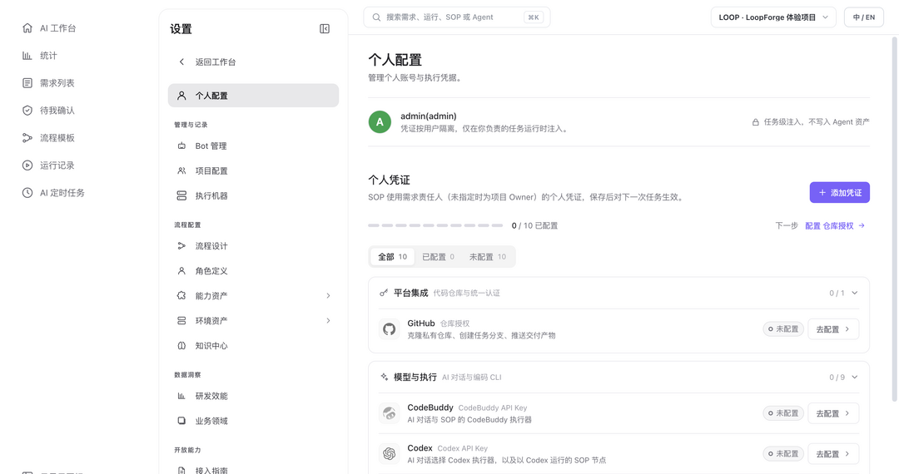
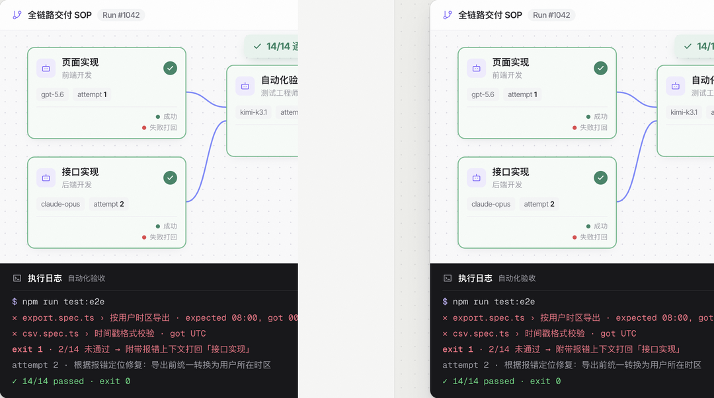
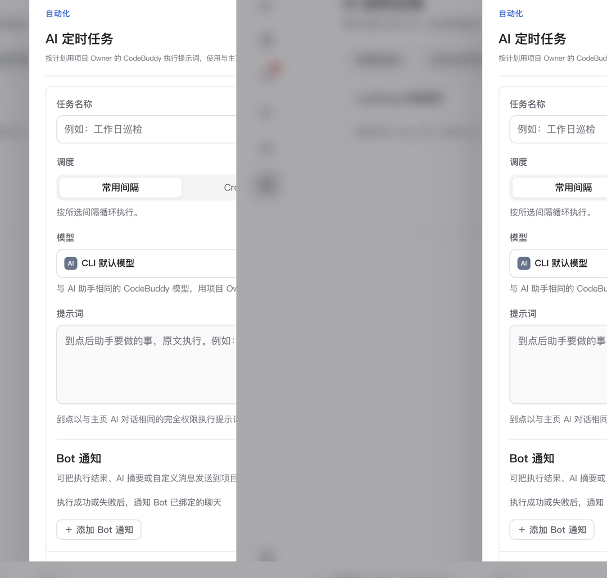

上周我把 LoopForge 装在一台 2 核 4G 的云服务器上。
从 git clone 到第一次跑完一条带人工审批的流程，大概十分钟。第三条命令敲完，它自己把镜像拉好、容器起好，终端直接吐了一个地址给我。
这是腾讯开源的团队级 AI 研发协作平台（GitHub 仓库 Tencent/LoopForge）。它跟普通 AI 对话框的思路不一样——不是让模型更聪明，而是把一套交付流程钉死，让 AI 在里面干活。
这篇按我实际跑的顺序写：装起来、免 Key 跑通、配执行器、两条工作路径、流程设计器怎么设门禁、定时任务，最后是七个我踩过的坑。

LoopForge 的 AI 工作台首页，左侧功能图标栏，右侧主对话区
01
它到底解决什么问题
先说结论：它补的是单次对话在团队交付场景下的五个缺口。
| 常见痛处 | LoopForge 的做法 |
| 合上电脑任务就断 | 任务跑在独立的 7×24 云端沙箱里，闲置自动存快照休眠，次日打开接着跑 |
| 跨岗位信息靠手搬 | 产品、设计、研发共用一个团队会话，需求澄清和代码提交在同一条上下文里 |
| AI 说改好了其实没测 | SOP 节点配客观门禁，按真实命令退出码 exit 0 判定，失败自动附日志打回 |
| 怕 AI 擅自做主 | 人工关口与操作确认卡片，关键节点停下来等你点通过或退回 |
| 同样的坑反复踩 | 每次跑完自动评测，0–100 分找出返工卡点，可一键写回流程或角色规范 |
它有两个形态，别搞混。
平台版：浏览器打开的 Web 工作台，Docker 部署，支持多人共享会话、可视化画布、审批中心。下面讲的全是这个。
Local 版：装进 Claude Code、Codex、Cursor、CodeBuddy、Pi 的 CLI 插件，一行命令，不需要服务端。
还有几个词后面会反复出现，先对齐：Main Bot 是首页里跟你对话的对象，相当于项目总管；角色是它派出去的专科同事；SOP 是钉死的办事流水线；沙箱是 AI 改代码、跑测试用的隔离容器。
02
装起来：三行命令，端口 8090
依赖只有四样：Git、curl、Python 3、Docker（含 Compose）。
没装 Docker 也别慌，脚本会问你一句然后帮你装；不想被问就带上 LOOPFORGE_YES=1。全新 Ubuntu 先把前三样装好：
sudo apt-get update && sudo apt-get install -y git curl python3
然后三行：
git clone https://github.com/Tencent/LoopForge.git
cd LoopForge
./start.sh
脚本干三件事：检查依赖、生成带独立密钥的 .env（已有就保留，重复执行是安全的）、按 compose.yaml 里钉死的版本拉镜像并后台启动。它不在你本机构建镜像，所以第一次也很快。
终端会打印公网、局域网、本机三个地址。默认端口 8090，本机就是 http://localhost:8090。
安全提醒：第一个注册的账号自动成为管理员，而管理员创建之前这个地址是完全开放的。云服务器先把安全组限制到你自己的 IP。要关掉公开注册，把 AGENTFLOW_ALLOW_SIGNUP 设成 false。
日常就这几条，都在仓库目录里敲：
| 想做的事 | 命令 |
| 看日志 | ./start.sh logs |
| 停止服务（数据保留） | ./start.sh stop |
| 拉新镜像并更新 | ./start.sh pull |
| 改用当前源码构建 | ./start.sh dev |
| 切回发布镜像 | ./start.sh release |
8090 被占了就换端口，不想暴露到公网就只监听本机：
AGENTFLOW_HTTP_PORT=8092 ./start.sh
LOOPFORGE_BIND=127.0.0.1 ./start.sh
注意：已经生成过 .env 之后改端口，要直接编辑那个文件再 ./start.sh restart。命令行前缀的变量不会覆盖已存在的配置，这一点很容易白折腾。
03
先跑一遍不用 Key 的流程
这一步别跳。它是后面所有机制的最小样本。
登录后平台已经预置了 LOOP · LoopForge 体验项目。回 AI 工作台首页，输入框下方四张快捷卡片的第一张写着「一键体验」，小字标注：无需 API Key 或 GitHub，跑通真实脚本、人工审批与交付产物。
点它。页面跳到运行详情，你会看到三段状态：
· 第 1 步「生成验收报告」绿色已完成，沙箱里真实生成了 reports/welcome.md
· 第 2 步「请确认验收报告」橙色边框，状态待审批
· 第 3 步「完成验收」灰着，等你拍板
中间那块黄色面板就是人工关口。点「确认通过，继续下游」，一两秒后后两步依次变绿，整条运行变成已完成。

运行详情页：脚本节点已完成，流程停在人工审批关口
然后点开「交付物」里的 reports/welcome.md。预览弹窗里除了渲染效果和源码，还有一行东西：SHA-256 校验值。
这个细节很小，但它意味着产物是有指纹的。你交给同事的到底是哪一版，能查。

产物抽屉：渲染预览、源码、SHA-256 与一键下载
顺带说一句：这条流程完全不调用大模型。它存在的目的就是让你在没配任何 Key 之前，先把「脚本节点 + 审批节点 + 产物」这段骨架摸清楚。
摸清了之后，换成有 AI 参与的流程，你不会分不清哪一步卡在机器、哪一步卡在人。
04
配 Key：9 种执行器，别填错坑
开源版不捆绑模型额度，得自己填。支持 9 种 Coding Agent 执行器：CodeBuddy、Codex、Claude Code、Cursor、OpenCode、Antigravity、Kimi Code、Pi、DeepSeek Harness。
入口只有一个：左下角齿轮 → 个人配置 → 模型与执行。也可以用输入框上方黄色提示条右边的「去配置」直接跳过去。
填法分四类，认错类别就是浪费半小时：
| 类别 | 执行器 | 关键要求 |
| 默认主力 | CodeBuddy | 先选站点（国际站 / 国内站），再填 ck_ 开头的 Key |
| 官方直连 | Cursor CLI | 填 crsr_ 开头的 Key，不用填 Base URL |
| 官方地址 + 可选网关 | Codex、Claude Code、Kimi Code、DeepSeek Harness、Antigravity | Base URL 留空走官方，接第三方网关才填。Kimi / DeepSeek 可选接口协议 |
| 纯网关 | OpenCode、Pi | Key、Base URL、接口协议三项都必填 |
最常见的报错是这个：把 DeepSeek、OpenAI 那种 sk- 开头的 Key 贴进 CodeBuddy，调用时直接 401。
CodeBuddy 只认 ck_，且必须和所选站点一致。手里的 sk- Key 请改填到 DeepSeek Harness、Kimi Code、OpenCode、Claude Code 或 Codex。

个人配置页：保存后凭证卡片会从「未配置」变成绿色「已配置」
两个生效规则要记住，不然会以为配置没成功：
· 个人凭证只对之后新发起的对话和任务生效，回不到聊了一半的会话
· SOP 跑起来用的是需求责任人的凭证，没指定就用项目 Owner 的。所以「我配好了为什么流程说没 Key」，去查这条需求归谁
另外，Key 只填在个人配置里。别贴在对话框，别写进需求描述——聊天记录是团队共享的。
05
两种工作方式，用错场合就白折腾
方式一：在 AI 工作台跟 Main Bot 聊。
适合头脑风暴、写方案、改文案、查进度。你说话，它干活；涉及改代码时它自己在后台开沙箱，最后提一个 PR，产物落在右侧抽屉里。
发第一条任务有四个标准动作，少一步就会卡住：新对话 → 确认归属项目 → 输入想法 → 发送。第二步最容易漏，输入框左上角如果还写着「选择项目」，发送箭头是灰的，你以为网卡了。
方式二：跑一条 SOP。
适合正式功能、Bug 修复这种要经过「澄清 → 设计 → 实现 → 独立评审 → 测试 → 人工验收」的任务。在对话里让 Main Bot 启动，或者去「需求列表 / 流程模板」点运行。
平台内置四条蓝图，只读，复制到自己项目后随便改：
| 内置 SOP | 典型阶段 | 要绑仓库吗 |
| 通用产品方案 | 澄清 → 方案设计 → 独立评审 → 人工定稿 | 不用 |
| 通用前端交付 | 需求定型 → 前端方案 → 实现 → 构建预览 → 人工验收 | 可选 |
| 通用后端交付 | 需求定型 → 接口设计 → 开发 → 独立评审 → 单测门禁 → 验收 | 可选 |
| 通用缺陷修复 | 复现定位 → 修复方案 → 修复 → 独立评审 → 回归测试 → 验收 | 需要 |
我的建议是先只跑一遍「通用产品方案」——纯文档产出，不用连 Git，最适合验证整条链路通不通。
判断标准很简单：一次就能做完的事，别上 SOP。
SOP 的价值在可重复、可追溯，代价是中间会停下来等你确认。三分钟的改动挂一条六节点流程，纯属给自己找事。
06
门禁才是这套东西的核心
点进任意一条 SOP，就是流程设计器：左边组件面板，中间画布，右边属性检查器。画布上实线表示成功往下，红色虚线表示失败打回。
只有五种节点，把所有工作切成三类来源：
| 节点 | 谁来干 |
| Agent 节点 | AI 角色写文档、写代码、做评审，必须交出指定文件 |
| 脚本节点 | 确定性命令：跑单测、构建、Lint、生成固定报表 |
| 人工门禁 | 暂停流水线，等你在「待我确认」里放行或退回 |
| 子 SOP | 嵌套复用另一条流程，比如公共的测试流程 |
| 预览构建 | 构建前端站点并生成可点开的预览链接 |
真正让它区别于「对话框里连着发指令」的，是节点能配两样东西。
一、客观门禁。要求必须产出 test-report.md，且测试命令返回 exit 0。返回非 0 就判定未通过。AI 说「我已经测过了」没有用，退出码说了算。
二、失败自动打回。门禁没过，或人工点了退回，流程沿红色虚线回到你指定的上游节点，并把刚才的报错日志一起塞过去。在你设的重试上限内，AI 拿着真实报错自己修，修完重跑门禁。

客观门禁：测试命令未通过时，自动提取报错日志并打回上游节点返工
还有一个设计我觉得挺对：版本冻结快照。
你改了画布点「保存 / 发布版本」，只对之后新启动的运行生效。正在跑的、或者停在人工审批里等你签字的，用的是启动那一刻的快照。中途改流程不会把在途任务搞乱。
另外，按「设置 → 角色定义」改提示词是改角色本身；画布上的 Agent 节点只负责挑选用哪个角色。两件事分开，避免有人在画布上随手改角色把别的流程带崩。
07
定时任务，和七个坑
左侧第七个图标是「AI 定时任务」。工作台是你主动找 AI 说话，定时任务是你定好闹钟，让它在后台自己开工——没人开浏览器，服务端也会准时唤醒沙箱。
新建时填四样：任务名和所属项目、执行计划、提示词或关联 SOP、结果通知（可选）。保存后可以在列表右侧点「立即运行」先试一次，不用等到点。

新建定时任务：执行计划、所属项目、模型与提示词
典型用法是每天上午九点巡检一次：检查过去 24 小时失败或卡住的运行，按优先级整理成简报，推到研发群。计划表达式写 0 9 * * 1-5，工作日九点，北京时间。
三个限制先知道，省得失望：
· 用的是项目 Owner 的模型凭据，不是你个人的
· 它只负责启动，不会替你审批，该停还是停
· 已经失败的运行固定用当时配置，修好 SOP 之后要新启动一次才生效
七个我踩过的坑
① 跑完「一键体验」，需求列表还是空的。因为它启动的是一条独立运行，不会凭空给你塞一条假需求。去「运行记录」看。
② 发送箭头是灰的。多半是输入框左上角还写着「选择项目」。选一次，浏览器会记住。
③ CodeBuddy 填 sk- 报 401。它只认 ck_。而且国际站、国内站别选反。
④ OpenCode、Pi 保存不了。它们没有官方模型服务，Base URL 必填，接口协议也要对上。
⑤ 换 CLI 后对话变空白。不同 CLI 的原生会话不能中途接力，系统给你开新对话是保护机制，不是丢记录。旧对话还在左侧列表里。
⑥ 任务好像卡住了，既没报错也没继续。看左侧「待我确认」有没有红色角标——它就是在等你。关掉页面也不会超时，它一直在那儿。
⑦ 定时任务第一次试跑失败，报 codebuddy: not found。SOP 绑的沙箱里没装执行器。改回平台默认沙箱再跑就行——这个错我也遇到过，报错信息藏得比较深，得点进失败节点看。
LoopForge 卖的不是"AI 写代码"，
而是"把验收标准写进流程里"。
你自己用 AI 写东西的时候，最容易出的问题不是它不会写，而是它写完了，你不知道该不该信。
LoopForge 的做法很朴素：把"什么算完成"提前写成命令和文件，让机器判。人只在需要判断的地方出现。
装一次，跑一遍那个不用 Key 的流程，你大概就知道它适不适合你们团队了。
相关链接
· 使用文档：loopforge.cn/docs
· 开源仓库：github.com/Tencent/LoopForge
· 本地一键安装：npx -y loopforge-cli@latest install claude